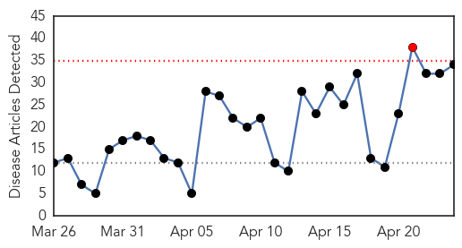
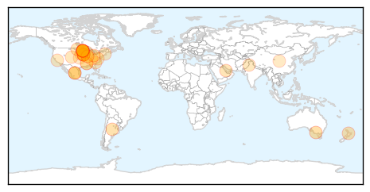
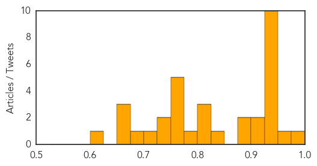
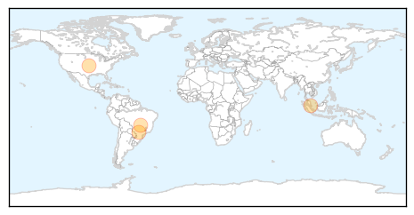

Influenza
30-Day Web Trend
1 alerts, 0 warnings

30-Day Twitter Trend
1 alerts, 0 warnings

Article Locations
Article Confidences
Top Articles:
- 0.996
- Illawarra residents should seek flu shots now
- 0.967
- Why Farmers Are Killing Millions Of Turkeys And Chickens In The Worst Avian Influenza Outbreak Yet
- 0.949
- Minnesota declares state of emergency over bird flu in poultry
- 0.948
- New bird flu cases detected as Minnesota, Wisconsin declare states of emergency
- 0.947
- Officials: Minnesota in state of emergency over bird flu
- 0.947
- Minnesota declares state of emergency over bird flu
- 0.946
- Minnesota just declared a state of emergency over bird flu outbreak in poultry
- 0.945
- Over 7 million turkeys and chickens euthanized in Midwest this year from bird flu outbreak
- 0.944
- Minnesota declares state of emergency over bird flu in poultry
- 0.936
- Minnesota declares state of emergency over bird flu outbreak
- 0.935
- Minnesota declares state of emergency over bird flu in poultry By Reuters
- 0.935
- Over 7 million turkeys and chickens euthanised in Midwest this year from bird flu outbreak
- 0.911
- Maori fight back against influenza in Waikato
- 0.908
- What dog owners need to know
- 0.892
- Canine flu arrives in Ohio
- 0.877
- Minnesota Declares Emergency Over Bird Flu Outbreak
- 0.850
- Minnesota Declares Emergency Over Bird Flu Outbreak
- 0.816
- Dayton declares state of emergency over bird flu crisis
- 0.806
- Avian flu confirmed in second North Dakota flock
- 0.803
- Minnesota declares bird flu state of emergency — RT USA
- 0.787
- Phillips County hantavirus victim identified
- 0.774
- Bird Flu Gets Minnesota In a State of Emergency
- 0.751
- April 23, 2015 Archives
- 0.751
- April 23, 2015 Archives
- 0.751
- April 23, 2015 Archives
- 0.751
- April 23, 2015 Archives
- 0.745
- Poultry growers urged to be proactive regarding avian flu
- 0.733
- From sex to septic tanks: My career in public health
- 0.706
- Minnesota declares H5N2 emergency as spread continues
- 0.679
- U.S. Bird Flu Scourge Means Months of Dead Turkey Cleanup
- 0.667
- Bird flu is in the air
- 0.656
- More Bird Flu Found in Iowa
- 0.653
- 6th Case of Bird Flu Detected in Wisconsin
- 0.608
- Bird flu outbreak could head eastward with fall migration
Top Tweets:
- 0.612
- Adoption of preventive behaviors in response to the 2009 H1N1 influenza pandemic: a multiethnic perspective http://t.co/ZuIU72ceC6
Dengue Fever
30-Day Web Trend
0 alerts, 0 warnings

30-Day Twitter Trend
0 alerts, 0 warnings

Article Locations
Article Confidences

Top Articles:
Top Tweets:
- 0.591
- Flavivirus news: Malaysia dengue outbreak prompts CDC travel notice - Outbreak News Today: Outb... http://t.co/H0cxDh1gyt pathogenposse